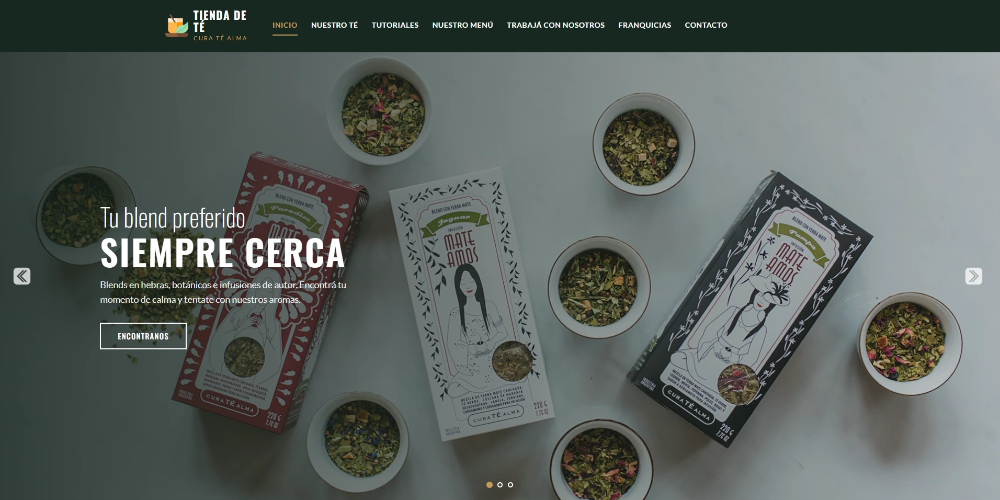
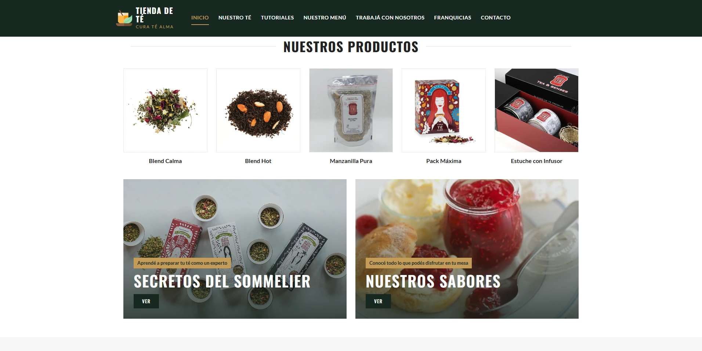
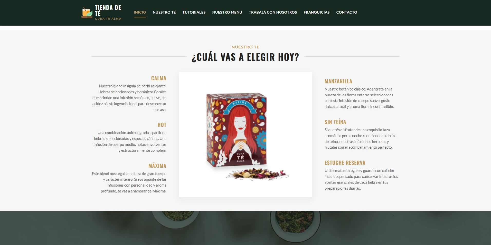
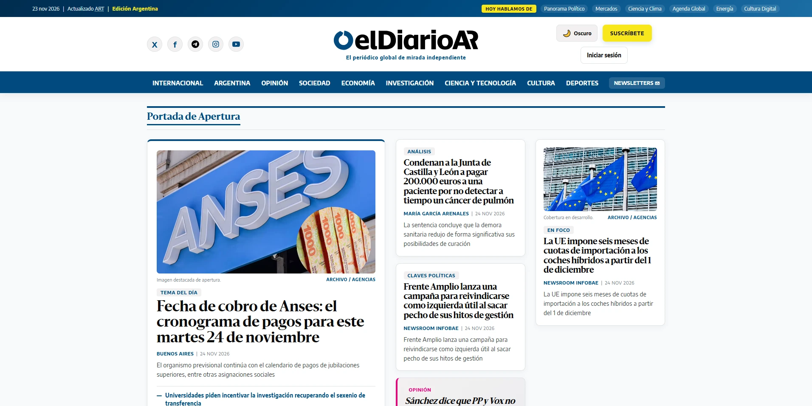
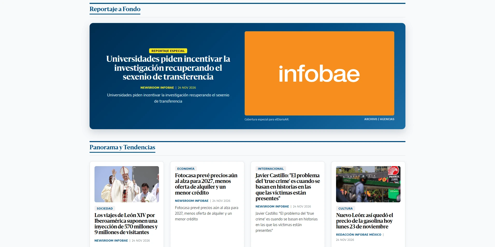
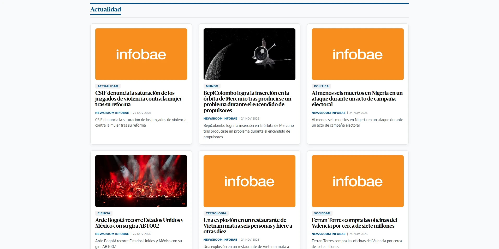

Desarrollo web
- Creación de páginas web.
- Estructuración de contenido mediante HTML.
- Diseño y presentación de interfaces mediante CSS.
- Incorporación de interactividad mediante JavaScript.
Portfolio personal
Estudiante de la Tecnicatura Superior en Desarrollo de Software en el IFTS N.º 16, interesado en crear páginas web y aplicaciones móviles.
Sobre mí
Mi interés por la informática comenzó cuando tenía aproximadamente 10 años. Recuerdo haber visto a una persona escribiendo código mientras aparecían bloques en la pantalla. En ese momento pensé: «Quiero ese superpoder». Aunque todavía no entendía realmente qué era programar, esa curiosidad se mantuvo conmigo hasta el día de hoy.
Actualmente soy estudiante de Desarrollo de Software en el IFTS N.º 16. Me considero una persona analítica, responsable y curiosa, con muchas ganas de seguir aprendiendo y superándome.
Disfruto especialmente crear páginas web y aplicaciones móviles. Para continuar desarrollándome, complemento mi formación académica con cursos de TalentoTech y Tecno3F.
Mi objetivo profesional es convertirme en un desarrollador senior con conocimientos profundos en las tecnologías que utilice. Más que conocer muchas herramientas superficialmente, quiero comprenderlas a fondo y desarrollar la capacidad de resolver problemas complejos y poco habituales.
Qué hago
Habilidades
La estructura base de mis páginas web.
Estilos, diseño responsive y presentación visual.
Interactividad y manipulación del DOM.
Portfolio



TPO 1 y 2 · IFTS N.º 16
Rediseño temático de una tienda de té. Se conserva la estructura, las tipografías y los estilos generales de la referencia, con contenido propio y una paleta en blanco, negro y marrón dorado.
Tecnologías: HTML5, CSS3 y JavaScript.
GitHub


TPO 2 · IFTS N.º 16
Reproducción frontend de la portada de elDiarioAR, con noticias argentinas cargadas dinámicamente desde Currents API y enlaces a sus publicaciones originales.
Tecnologías: HTML5, CSS3, JavaScript y Currents API.
GitHubEducación y formación
Formación académica
Tecnicatura Superior en Desarrollo de Software.
Formación complementaria
Cursos ofrecidos por el Gobierno de la Ciudad Autónoma de Buenos Aires.
Formación complementaria
Cursos ofrecidos por el partido de Tres de Febrero, provincia de Buenos Aires.